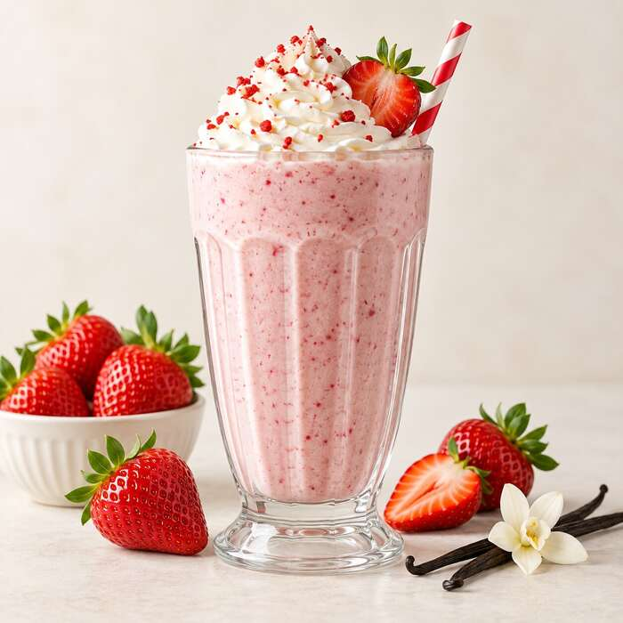
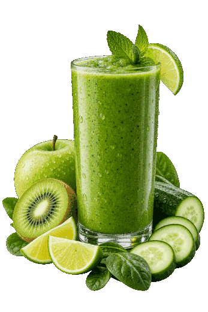
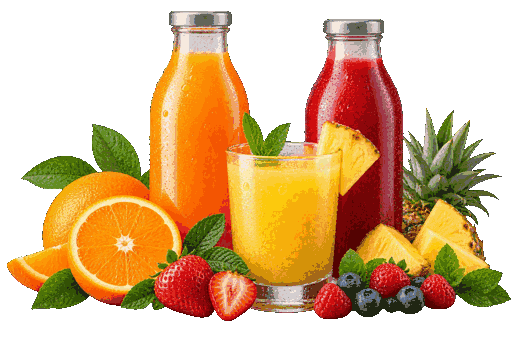
Bebidas naturales
Jugos de frutas frescas
En Foodily ofrecemos jugos y batidos preparados con frutas seleccionadas. Nuestra propuesta combina frescura, sabor y diferentes opciones para nuestros clientes.
Ver bebidas
Opciones para ti
Nuestras bebidas más solicitadas

Jugo tropical
Mango, naranja y maracuyá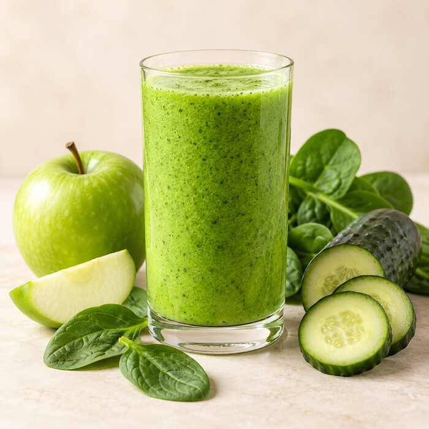
Batido verde
Manzana, pepino y espinaca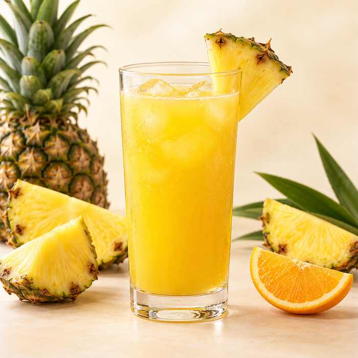
Jugo de piña
Piña, naranja y agua
Carta de bebidas
Tamaños, ingredientes y precios
| Bebida | Tamaño | Ingredientes | Precio |
|---|---|---|---|
| Batido de Fresa | 500 ml | Fresa, leche y vainilla | S/ 12.00 |
| Jugo Tropical | 500 ml | Mango, naranja y maracuyá | S/ 13.00 |
| Batido Verde | 500 ml | Manzana, pepino y espinaca | S/ 14.00 |
| Jugo de Piña | 500 ml | Piña, naranja y agua | S/ 10.00 |
| Jugo de Naranja | 500 ml | Naranja natural y agua | S/ 9.00 |
| Precios referenciales en soles. | |||
Promociones de la carta
Dúo tropical
Un jugo tropical y un jugo de piña de 500 ml cada uno por S/ 21.00. Precio de demostración.
Ver la cartaBatidos para compartir
Un batido de fresa y un batido verde de 500 ml cada uno por S/ 24.00. Precio de demostración.
Consultar por una reserva
Multimedia
Conoce nuestra preparación
Receta de batido verde
Batido de fresa paso a paso
Receta en video. Ver en YouTube
Fácil de preparar
Receta de batido verde
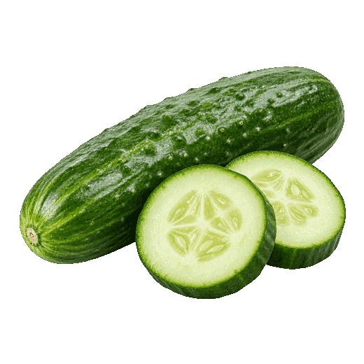
Pepino
Aporta un sabor fresco y una textura ligera al batido.
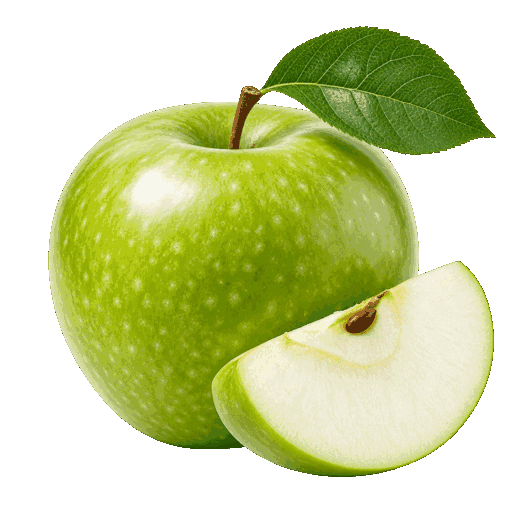
Manzana
Añade un sabor dulce y combina bien con los ingredientes verdes.
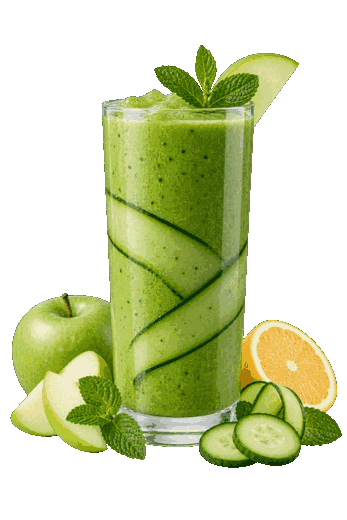
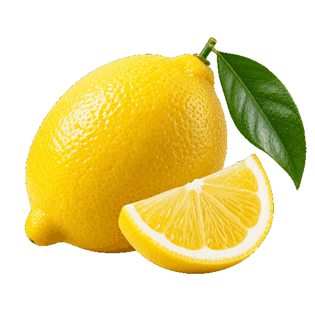
Limón
Agrega un toque cítrico y ayuda a equilibrar los sabores.
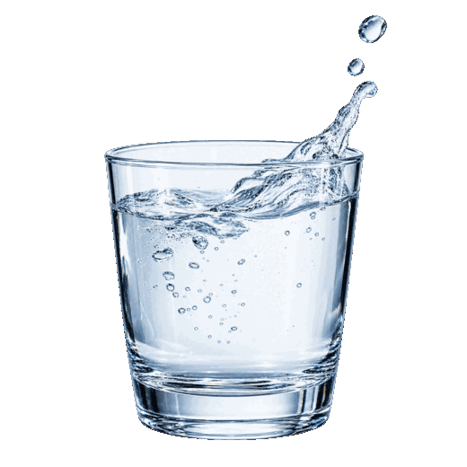
Agua fresca
Permite licuar los ingredientes y obtener la consistencia deseada.
Nuestra galería
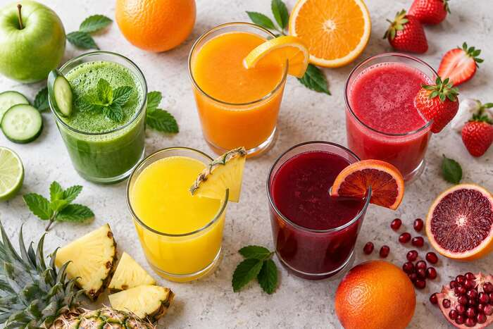
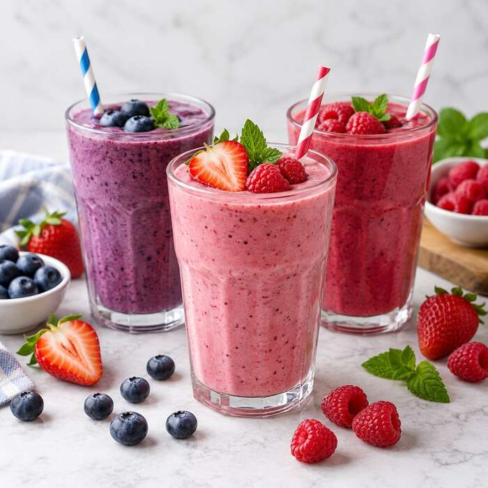
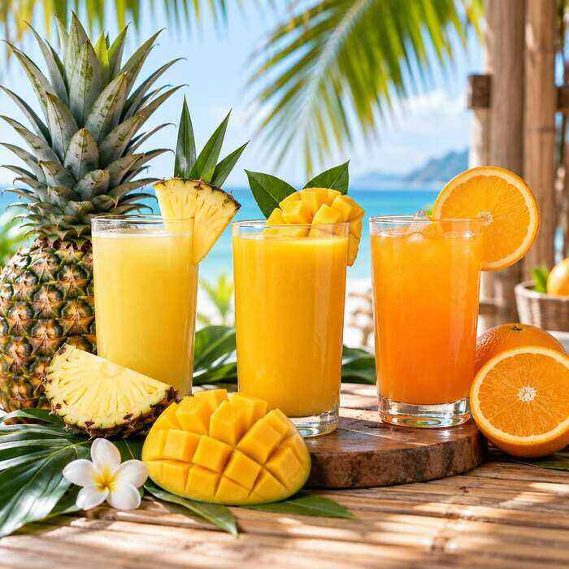
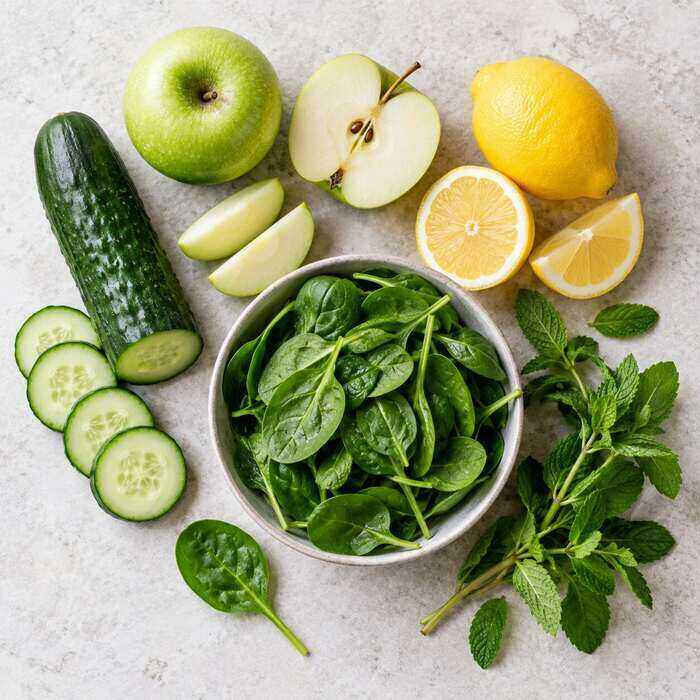
Testimonio
Lo que dicen nuestros clientes
“Las bebidas tienen un sabor agradable y se sienten frescas. Me gustó encontrar varias opciones de frutas.”
María González - Cliente
Escríbenos
Consultas y reservas
Consulta por nuestras bebidas o prueba el formulario de reservas.